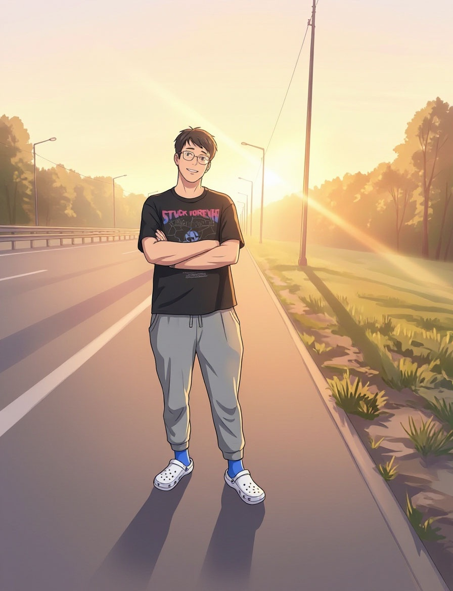
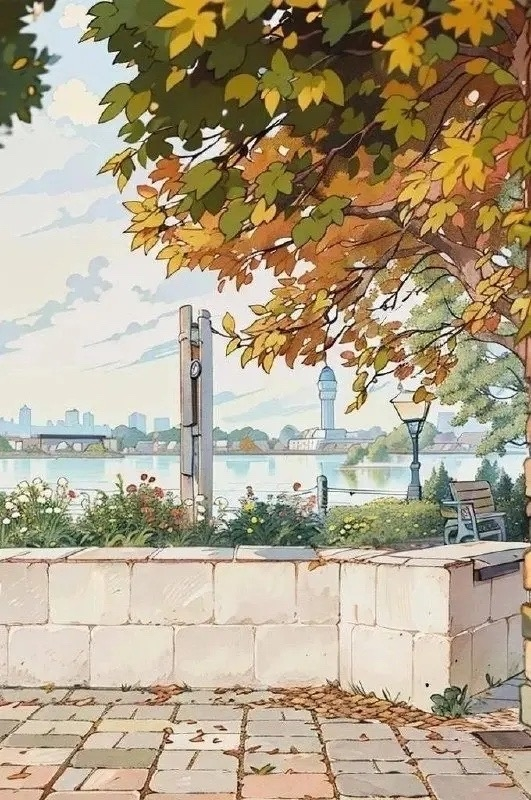
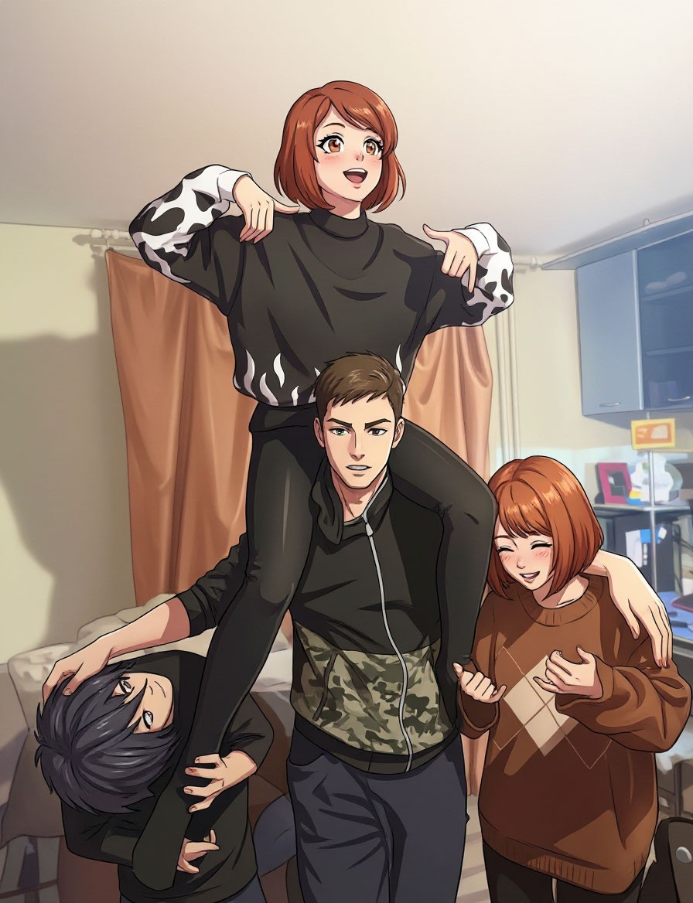
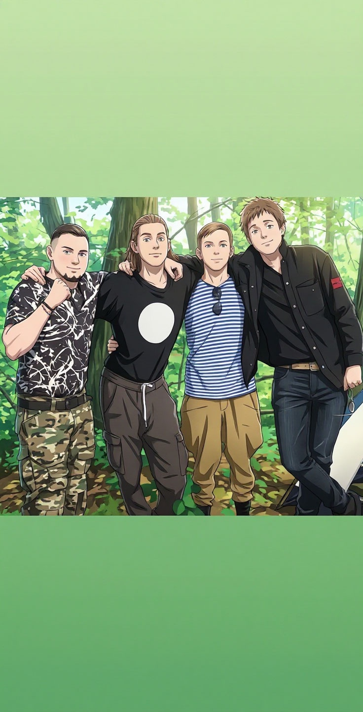
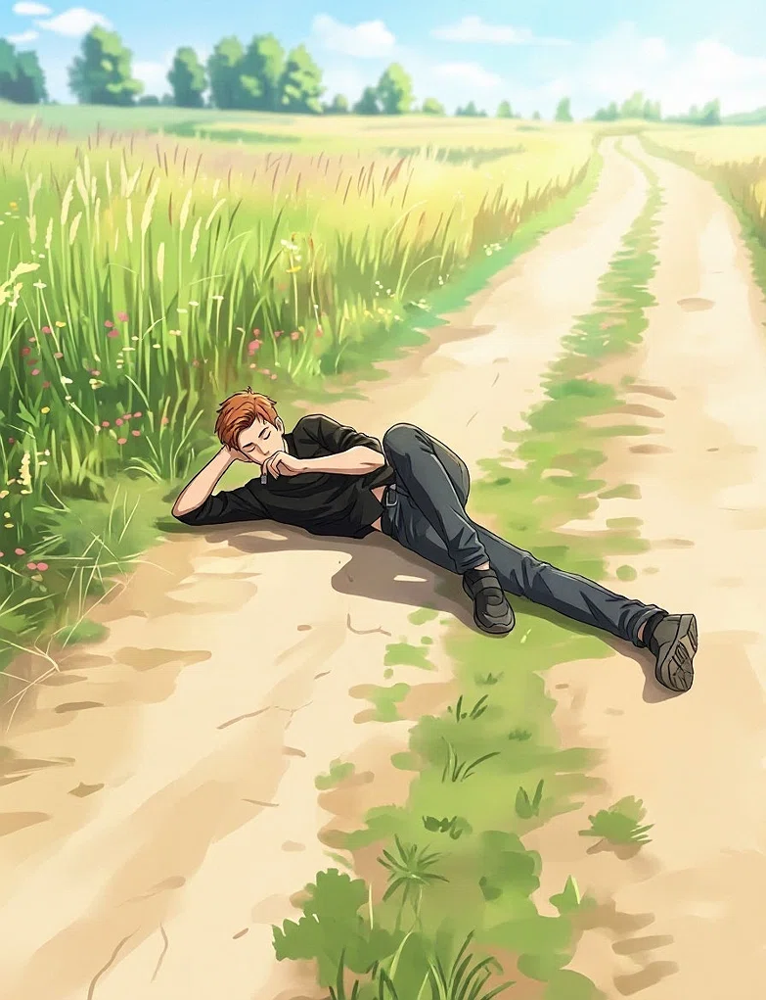

ИБРАГИМ
～ Загрузка ～
0 / 0
⚠️ Файлы не найдены:
ИБРАГИМ
～ Бесконечная дорога ～
НАЧАТЬ
Это история о парне, который искал.
О парне, который терял и находил.
О дороге, у которой нет конца.
ВНУТРЕННИЙ МИР
🕯️ Тихость
💔 Боль
🎭 Маска
🌫️ Потерянность
🌱 Надежда
...
...
▼ клик · пробел · Enter
КОНЕЦ
НАЧАТЬ СНОВА
Автор
Хузиев Ильназ
Главный герой
Ибрагим Шакирьянов




